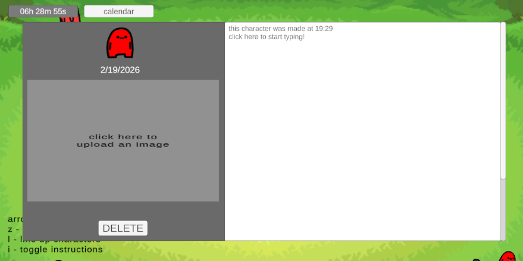

entry #7: glhf-grow-desktop-journalapp
This week, I continued working on the desktop version of the journal
app, and I was thrilled to finally receive some user feedback. One of
the most significant suggestions was to allow users to "favorite"
specific days and categorize their entries. I love the idea of making
each category its own distinct area—similar to the box system in the
Pokémon PC. Since that is a more substantial feature, I plan to dive
deeper into it as I settle into my new schedule as a Microelectronic
Technology student. For now, I am focusing on the favoriting system
and building a dedicated section so users can easily access their most
important days.
In addition to new features, I spent time refining the UI for the
character details page. Based on user input, I added a helpful prompt
to guide users on where to click to edit text or upload images. I also
implemented a toggleable instruction overlay in the main section to
keep the interface clean for experienced users. On the technical side,
I explored using AppleScript to automate app permissions. This should
significantly streamline the process for new users, making the app
much easier to install and use right out of the box.
Looking ahead, my immediate goal is to finalize the favoriting feature
and implement a filter so users can view only their favorited
characters. Once that is polished, I’ll begin expanding the
categorization system. After the journal app reaches a steady state,
I’m planning a quick revamp of my runner game before finally beginning
the architecture for the chess project I’ve been envisioning. It’s a
busy roadmap, but I’m excited to see how these projects evolve
alongside my new studies.
